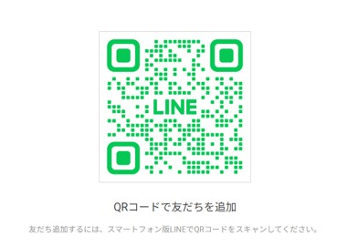

病院で処方せんを受け取ったあと、薬局でお薬ができあがるのを待つ時間を短くしたい。そんな方におすすめなのが、LINEでの処方せん事前送信です。香椎台調剤薬局の公式LINEに処方せんの写真を送っていただくと、ご来局前にお薬の準備を始めることができます。
LINEで送るメリット
- 待ち時間が短くなる：ご来局前に調剤を進めておけるため、お薬のお渡しまでがスムーズです。
- 在庫を先に確認できる：在庫が足りないお薬があれば先にご連絡し、取り寄せの手配ができます。
- 都合のよい時間に受け取れる：お仕事帰りやお買い物のついでなど、ご都合に合わせてお越しいただけます。
- 受診後すぐに送れる：病院の待合室や駐車場からでも、スマートフォンひとつで送信できます。
送り方（4ステップ）
- 友だち追加：下のQRコードを読み取り、香椎台調剤薬局のLINEを友だち追加します。
- 処方せんを撮影：処方せん全体が写るように、明るい場所で真上から撮影します。文字がぼやけていないか確認してください。
- トークで送信：撮影した写真を送り、お名前・ご来局予定の時間・ジェネリック医薬品のご希望をあわせてお知らせください。
- 準備ができたらご来局：お薬の準備ができましたらLINEでお知らせします。処方せんの原本を持ってお越しください。

ご注意いただきたいこと
- 処方せんの原本は必ずお持ちください。原本と引き換えでのお渡しになります。
- 処方せんの有効期限は、交付日を含めて4日間（土日・祝日も含みます）です。期限内にご来局ください。
- 営業時間外に送られた処方せんは、翌営業日の対応になる場合があります。お急ぎの場合はお電話でご相談ください。
- マイナ保険証（または資格確認書）とお薬手帳もあわせてお持ちください。
FAX（092-683-0747）での事前送信も受け付けています。LINEの使い方がわからない場合も、お気軽にお電話ください。